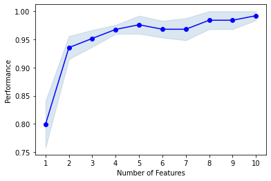

SequentialFeatureSelector: The popular forward and backward feature selection approaches (including floating variants)
Implementation of sequential feature algorithms (SFAs) -- greedy search algorithms -- that have been developed as a suboptimal solution to the computationally often not feasible exhaustive search.
from mlxtend.feature_selection import SequentialFeatureSelector
Overview
Sequential feature selection algorithms are a family of greedy search algorithms that are used to reduce an initial d-dimensional feature space to a k-dimensional feature subspace where k < d. The motivation behind feature selection algorithms is to automatically select a subset of features most relevant to the problem. The goal of feature selection is two-fold: We want to improve the computational efficiency and reduce the model's generalization error by removing irrelevant features or noise. In addition, a wrapper approach such as sequential feature selection is advantageous if embedded feature selection -- for example, a regularization penalty like LASSO -- is not applicable.
In a nutshell, SFAs remove or add one feature at a time based on the classifier performance until a feature subset of the desired size k is reached. There are four different flavors of SFAs available via the SequentialFeatureSelector:
- Sequential Forward Selection (SFS)
- Sequential Backward Selection (SBS)
- Sequential Forward Floating Selection (SFFS)
- Sequential Backward Floating Selection (SBFS)
The floating variants, SFFS and SBFS, can be considered extensions to the simpler SFS and SBS algorithms. The floating algorithms have an additional exclusion or inclusion step to remove features once they were included (or excluded) so that a larger number of feature subset combinations can be sampled. It is important to emphasize that this step is conditional and only occurs if the resulting feature subset is assessed as "better" by the criterion function after the removal (or addition) of a particular feature. Furthermore, I added an optional check to skip the conditional exclusion steps if the algorithm gets stuck in cycles.
How is this different from Recursive Feature Elimination (RFE) -- e.g., as implemented in sklearn.feature_selection.RFE? RFE is computationally less complex using the feature weight coefficients (e.g., linear models) or feature importance (tree-based algorithms) to eliminate features recursively, whereas SFSs eliminate (or add) features based on a user-defined classifier/regression performance metric.
Tutorial Videos
Visual Illustration
A visual illustration of the sequential backward selection process is provided below, from the paper
- Joe Bemister-Buffington, Alex J. Wolf, Sebastian Raschka, and Leslie A. Kuhn (2020) Machine Learning to Identify Flexibility Signatures of Class A GPCR Inhibition Biomolecules 2020, 10, 454. https://www.mdpi.com/2218-273X/10/3/454#

Algorithmic Details
Sequential Forward Selection (SFS)
Input:
- The SFS algorithm takes the whole -dimensional feature set as input.
Output: , where
- SFS returns a subset of features; the number of selected features , where , has to be specified a priori.
Initialization: ,
- We initialize the algorithm with an empty set ("null set") so that (where is the size of the subset).
Step 1 (Inclusion):
Go to Step 1
- in this step, we add an additional feature, , to our feature subset .
- is the feature that maximizes our criterion function, that is, the feature that is associated with the best classifier performance if it is added to .
- We repeat this procedure until the termination criterion is satisfied.
Termination:
- We add features from the feature subset until the feature subset of size contains the number of desired features that we specified a priori.
Sequential Backward Selection (SBS)
Input: the set of all features,
- The SBS algorithm takes the whole feature set as input.
Output: , where
- SBS returns a subset of features; the number of selected features , where , has to be specified a priori.
Initialization: ,
- We initialize the algorithm with the given feature set so that the .
Step 1 (Exclusion):
Go to Step 1
- In this step, we remove a feature, from our feature subset .
- is the feature that maximizes our criterion function upon re,oval, that is, the feature that is associated with the best classifier performance if it is removed from .
- We repeat this procedure until the termination criterion is satisfied.
Termination:
- We add features from the feature subset until the feature subset of size contains the number of desired features that we specified a priori.
Sequential Backward Floating Selection (SBFS)
Input: the set of all features,
- The SBFS algorithm takes the whole feature set as input.
Output: , where
- SBFS returns a subset of features; the number of selected features , where , has to be specified a priori.
Initialization: ,
- We initialize the algorithm with the given feature set so that the .
Step 1 (Exclusion):
Go to Step 2
- In this step, we remove a feature, from our feature subset .
- is the feature that maximizes our criterion function upon removal, that is, the feature that is associated with the best classifier performance if it is removed from .
Step 2 (Conditional Inclusion):
if J(X_k + x) > J(X_k):
Go to Step 1
- In Step 2, we search for features that improve the classifier performance if they are added back to the feature subset. If such features exist, we add the feature for which the performance improvement is maximized. If or an improvement cannot be made (i.e., such feature cannot be found), go back to step 1; else, repeat this step.
Termination:
- We add features from the feature subset until the feature subset of size contains the number of desired features that we specified a priori.
Sequential Forward Floating Selection (SFFS)
Input: the set of all features,
- The SFFS algorithm takes the whole feature set as input, if our feature space consists of, e.g. 10, if our feature space consists of 10 dimensions (d = 10).
Output: a subset of features, , where
- The returned output of the algorithm is a subset of the feature space of a specified size. E.g., a subset of 5 features from a 10-dimensional feature space (k = 5, d = 10).
Initialization: ,
- We initialize the algorithm with an empty set ("null set") so that the k = 0 (where k is the size of the subset)
Step 1 (Inclusion):
Go to Step 2
Step 2 (Conditional Exclusion):
:
Go to Step 1
- In step 1, we include the feature from the feature space that leads to the best performance increase for our feature subset (assessed by the criterion function). Then, we go over to step 2
-
In step 2, we only remove a feature if the resulting subset would gain an increase in performance. If or an improvement cannot be made (i.e., such feature cannot be found), go back to step 1; else, repeat this step.
-
Steps 1 and 2 are repeated until the Termination criterion is reached.
Termination: stop when k equals the number of desired features
References
-
Ferri, F. J., Pudil P., Hatef, M., Kittler, J. (1994). "Comparative study of techniques for large-scale feature selection." Pattern Recognition in Practice IV : 403-413.
-
Pudil, P., Novovičová, J., & Kittler, J. (1994). "Floating search methods in feature selection." Pattern recognition letters 15.11 (1994): 1119-1125.
Example 1 - A simple Sequential Forward Selection example
Initializing a simple classifier from scikit-learn:
from sklearn.neighbors import KNeighborsClassifier
from sklearn.datasets import load_iris
iris = load_iris()
X = iris.data
y = iris.target
knn = KNeighborsClassifier(n_neighbors=4)
We start by selection the "best" 3 features from the Iris dataset via Sequential Forward Selection (SFS). Here, we set forward=True and floating=False. By choosing cv=0, we don't perform any cross-validation, therefore, the performance (here: 'accuracy') is computed entirely on the training set.
from mlxtend.feature_selection import SequentialFeatureSelector as SFS
sfs1 = SFS(knn,
k_features=3,
forward=True,
floating=False,
verbose=2,
scoring='accuracy',
cv=0)
sfs1 = sfs1.fit(X, y)
[Parallel(n_jobs=1)]: Using backend SequentialBackend with 1 concurrent workers.
[Parallel(n_jobs=1)]: Done 1 out of 1 | elapsed: 0.0s remaining: 0.0s
[Parallel(n_jobs=1)]: Done 4 out of 4 | elapsed: 0.0s finished
[2022-09-06 20:51:22] Features: 1/3 -- score: 0.96[Parallel(n_jobs=1)]: Using backend SequentialBackend with 1 concurrent workers.
[Parallel(n_jobs=1)]: Done 1 out of 1 | elapsed: 0.0s remaining: 0.0s
[Parallel(n_jobs=1)]: Done 3 out of 3 | elapsed: 0.0s finished
[2022-09-06 20:51:22] Features: 2/3 -- score: 0.9733333333333334[Parallel(n_jobs=1)]: Using backend SequentialBackend with 1 concurrent workers.
[Parallel(n_jobs=1)]: Done 1 out of 1 | elapsed: 0.0s remaining: 0.0s
[Parallel(n_jobs=1)]: Done 2 out of 2 | elapsed: 0.0s finished
[2022-09-06 20:51:22] Features: 3/3 -- score: 0.9733333333333334
Via the subsets_ attribute, we can take a look at the selected feature indices at each step:
sfs1.subsets_
{1: {'feature_idx': (3,),
'cv_scores': array([0.96]),
'avg_score': 0.96,
'feature_names': ('3',)},
2: {'feature_idx': (2, 3),
'cv_scores': array([0.97333333]),
'avg_score': 0.9733333333333334,
'feature_names': ('2', '3')},
3: {'feature_idx': (1, 2, 3),
'cv_scores': array([0.97333333]),
'avg_score': 0.9733333333333334,
'feature_names': ('1', '2', '3')}}
Note that the 'feature_names' entry is simply a string representation of the 'feature_idx' in this case. Optionally, we can provide custom feature names via the fit method's custom_feature_names parameter:
feature_names = ('sepal length', 'sepal width', 'petal length', 'petal width')
sfs1 = sfs1.fit(X, y, custom_feature_names=feature_names)
sfs1.subsets_
[Parallel(n_jobs=1)]: Using backend SequentialBackend with 1 concurrent workers.
[Parallel(n_jobs=1)]: Done 1 out of 1 | elapsed: 0.0s remaining: 0.0s
[Parallel(n_jobs=1)]: Done 4 out of 4 | elapsed: 0.0s finished
[2022-09-06 20:51:22] Features: 1/3 -- score: 0.96[Parallel(n_jobs=1)]: Using backend SequentialBackend with 1 concurrent workers.
[Parallel(n_jobs=1)]: Done 1 out of 1 | elapsed: 0.0s remaining: 0.0s
[Parallel(n_jobs=1)]: Done 3 out of 3 | elapsed: 0.0s finished
[2022-09-06 20:51:22] Features: 2/3 -- score: 0.9733333333333334[Parallel(n_jobs=1)]: Using backend SequentialBackend with 1 concurrent workers.
[Parallel(n_jobs=1)]: Done 1 out of 1 | elapsed: 0.0s remaining: 0.0s
[Parallel(n_jobs=1)]: Done 2 out of 2 | elapsed: 0.0s finished
[2022-09-06 20:51:22] Features: 3/3 -- score: 0.9733333333333334
{1: {'feature_idx': (3,),
'cv_scores': array([0.96]),
'avg_score': 0.96,
'feature_names': ('petal width',)},
2: {'feature_idx': (2, 3),
'cv_scores': array([0.97333333]),
'avg_score': 0.9733333333333334,
'feature_names': ('petal length', 'petal width')},
3: {'feature_idx': (1, 2, 3),
'cv_scores': array([0.97333333]),
'avg_score': 0.9733333333333334,
'feature_names': ('sepal width', 'petal length', 'petal width')}}
Furthermore, we can access the indices of the 3 best features directly via the k_feature_idx_ attribute:
sfs1.k_feature_idx_
(1, 2, 3)
And similarly, to obtain the names of these features, given that we provided an argument to the custom_feature_names parameter, we can refer to the sfs1.k_feature_names_ attribute:
sfs1.k_feature_names_
('sepal width', 'petal length', 'petal width')
Finally, the prediction score for these 3 features can be accesses via k_score_:
sfs1.k_score_
0.9733333333333334
Example 2 - Toggling between SFS, SBS, SFFS, and SBFS
Using the forward and floating parameters, we can toggle between SFS, SBS, SFFS, and SBFS as shown below. Note that we are performing (stratified) 4-fold cross-validation for more robust estimates in contrast to Example 1. Via n_jobs=-1, we choose to run the cross-validation on all our available CPU cores.
# Sequential Forward Selection
sfs = SFS(knn,
k_features=3,
forward=True,
floating=False,
scoring='accuracy',
cv=4,
n_jobs=-1)
sfs = sfs.fit(X, y)
print('\nSequential Forward Selection (k=3):')
print(sfs.k_feature_idx_)
print('CV Score:')
print(sfs.k_score_)
###################################################
# Sequential Backward Selection
sbs = SFS(knn,
k_features=3,
forward=False,
floating=False,
scoring='accuracy',
cv=4,
n_jobs=-1)
sbs = sbs.fit(X, y)
print('\nSequential Backward Selection (k=3):')
print(sbs.k_feature_idx_)
print('CV Score:')
print(sbs.k_score_)
###################################################
# Sequential Forward Floating Selection
sffs = SFS(knn,
k_features=3,
forward=True,
floating=True,
scoring='accuracy',
cv=4,
n_jobs=-1)
sffs = sffs.fit(X, y)
print('\nSequential Forward Floating Selection (k=3):')
print(sffs.k_feature_idx_)
print('CV Score:')
print(sffs.k_score_)
###################################################
# Sequential Backward Floating Selection
sbfs = SFS(knn,
k_features=3,
forward=False,
floating=True,
scoring='accuracy',
cv=4,
n_jobs=-1)
sbfs = sbfs.fit(X, y)
print('\nSequential Backward Floating Selection (k=3):')
print(sbfs.k_feature_idx_)
print('CV Score:')
print(sbfs.k_score_)
/Users/sebastianraschka/miniforge3/lib/python3.9/site-packages/scipy/__init__.py:146: UserWarning: A NumPy version >=1.16.5 and <1.23.0 is required for this version of SciPy (detected version 1.23.1
warnings.warn(f"A NumPy version >={np_minversion} and <{np_maxversion}"
/Users/sebastianraschka/miniforge3/lib/python3.9/site-packages/scipy/__init__.py:146: UserWarning: A NumPy version >=1.16.5 and <1.23.0 is required for this version of SciPy (detected version 1.23.1
warnings.warn(f"A NumPy version >={np_minversion} and <{np_maxversion}"
/Users/sebastianraschka/miniforge3/lib/python3.9/site-packages/scipy/__init__.py:146: UserWarning: A NumPy version >=1.16.5 and <1.23.0 is required for this version of SciPy (detected version 1.23.1
warnings.warn(f"A NumPy version >={np_minversion} and <{np_maxversion}"
/Users/sebastianraschka/miniforge3/lib/python3.9/site-packages/scipy/__init__.py:146: UserWarning: A NumPy version >=1.16.5 and <1.23.0 is required for this version of SciPy (detected version 1.23.1
warnings.warn(f"A NumPy version >={np_minversion} and <{np_maxversion}"
/Users/sebastianraschka/miniforge3/lib/python3.9/site-packages/scipy/__init__.py:146: UserWarning: A NumPy version >=1.16.5 and <1.23.0 is required for this version of SciPy (detected version 1.23.1
warnings.warn(f"A NumPy version >={np_minversion} and <{np_maxversion}"
/Users/sebastianraschka/miniforge3/lib/python3.9/site-packages/scipy/__init__.py:146: UserWarning: A NumPy version >=1.16.5 and <1.23.0 is required for this version of SciPy (detected version 1.23.1
warnings.warn(f"A NumPy version >={np_minversion} and <{np_maxversion}"
/Users/sebastianraschka/miniforge3/lib/python3.9/site-packages/scipy/__init__.py:146: UserWarning: A NumPy version >=1.16.5 and <1.23.0 is required for this version of SciPy (detected version 1.23.1
warnings.warn(f"A NumPy version >={np_minversion} and <{np_maxversion}"
Sequential Forward Selection (k=3):
(1, 2, 3)
CV Score:
0.9731507823613088
Sequential Backward Selection (k=3):
(1, 2, 3)
CV Score:
0.9731507823613088
Sequential Forward Floating Selection (k=3):
(1, 2, 3)
CV Score:
0.9731507823613088
/Users/sebastianraschka/miniforge3/lib/python3.9/site-packages/scipy/__init__.py:146: UserWarning: A NumPy version >=1.16.5 and <1.23.0 is required for this version of SciPy (detected version 1.23.1
warnings.warn(f"A NumPy version >={np_minversion} and <{np_maxversion}"
/Users/sebastianraschka/miniforge3/lib/python3.9/site-packages/scipy/__init__.py:146: UserWarning: A NumPy version >=1.16.5 and <1.23.0 is required for this version of SciPy (detected version 1.23.1
warnings.warn(f"A NumPy version >={np_minversion} and <{np_maxversion}"
Sequential Backward Floating Selection (k=3):
(1, 2, 3)
CV Score:
0.9731507823613088
In this simple scenario, selecting the best 3 features out of the 4 available features in the Iris set, we end up with similar results regardless of which sequential selection algorithms we used.
Example 3 - Visualizing the results in DataFrames
For our convenience, we can visualize the output from the feature selection in a pandas DataFrame format using the get_metric_dict method of the SequentialFeatureSelector object. The columns std_dev and std_err represent the standard deviation and standard errors of the cross-validation scores, respectively.
Below, we see the DataFrame of the Sequential Forward Selector from Example 2:
import pandas as pd
pd.DataFrame.from_dict(sfs.get_metric_dict()).T
| feature_idx | cv_scores | avg_score | feature_names | ci_bound | std_dev | std_err | |
|---|---|---|---|---|---|---|---|
| 1 | (3,) | [0.9736842105263158, 0.9473684210526315, 0.918... | 0.959993 | (3,) | 0.048319 | 0.030143 | 0.017403 |
| 2 | (2, 3) | [0.9736842105263158, 0.9473684210526315, 0.918... | 0.959993 | (2, 3) | 0.048319 | 0.030143 | 0.017403 |
| 3 | (1, 2, 3) | [0.9736842105263158, 1.0, 0.9459459459459459, ... | 0.973151 | (1, 2, 3) | 0.030639 | 0.019113 | 0.011035 |
Now, let's compare it to the Sequential Backward Selector:
pd.DataFrame.from_dict(sbs.get_metric_dict()).T
| feature_idx | cv_scores | avg_score | feature_names | ci_bound | std_dev | std_err | |
|---|---|---|---|---|---|---|---|
| 4 | (0, 1, 2, 3) | [0.9736842105263158, 0.9473684210526315, 0.918... | 0.953236 | (0, 1, 2, 3) | 0.03602 | 0.022471 | 0.012974 |
| 3 | (1, 2, 3) | [0.9736842105263158, 1.0, 0.9459459459459459, ... | 0.973151 | (1, 2, 3) | 0.030639 | 0.019113 | 0.011035 |
We can see that both SFS and SBFS found the same "best" 3 features, however, the intermediate steps where obviously different.
The ci_bound column in the DataFrames above represents the confidence interval around the computed cross-validation scores. By default, a confidence interval of 95% is used, but we can use different confidence bounds via the confidence_interval parameter. E.g., the confidence bounds for a 90% confidence interval can be obtained as follows:
pd.DataFrame.from_dict(sbs.get_metric_dict(confidence_interval=0.90)).T
| feature_idx | cv_scores | avg_score | feature_names | ci_bound | std_dev | std_err | |
|---|---|---|---|---|---|---|---|
| 4 | (0, 1, 2, 3) | [0.9736842105263158, 0.9473684210526315, 0.918... | 0.953236 | (0, 1, 2, 3) | 0.027658 | 0.022471 | 0.012974 |
| 3 | (1, 2, 3) | [0.9736842105263158, 1.0, 0.9459459459459459, ... | 0.973151 | (1, 2, 3) | 0.023525 | 0.019113 | 0.011035 |
Example 4 - Plotting the results
After importing the little helper function plotting.plot_sequential_feature_selection, we can also visualize the results using matplotlib figures.
from mlxtend.plotting import plot_sequential_feature_selection as plot_sfs
import matplotlib.pyplot as plt
sfs = SFS(knn,
k_features=4,
forward=True,
floating=False,
scoring='accuracy',
verbose=2,
cv=5)
sfs = sfs.fit(X, y)
fig1 = plot_sfs(sfs.get_metric_dict(), kind='std_dev')
plt.ylim([0.8, 1])
plt.title('Sequential Forward Selection (w. StdDev)')
plt.grid()
plt.show()
[Parallel(n_jobs=1)]: Using backend SequentialBackend with 1 concurrent workers.
[Parallel(n_jobs=1)]: Done 1 out of 1 | elapsed: 0.0s remaining: 0.0s
[Parallel(n_jobs=1)]: Done 4 out of 4 | elapsed: 0.0s finished
[2022-09-06 20:51:24] Features: 1/4 -- score: 0.96[Parallel(n_jobs=1)]: Using backend SequentialBackend with 1 concurrent workers.
[Parallel(n_jobs=1)]: Done 1 out of 1 | elapsed: 0.0s remaining: 0.0s
[Parallel(n_jobs=1)]: Done 3 out of 3 | elapsed: 0.0s finished
[2022-09-06 20:51:24] Features: 2/4 -- score: 0.9666666666666668[Parallel(n_jobs=1)]: Using backend SequentialBackend with 1 concurrent workers.
[Parallel(n_jobs=1)]: Done 1 out of 1 | elapsed: 0.0s remaining: 0.0s
[Parallel(n_jobs=1)]: Done 2 out of 2 | elapsed: 0.0s finished
[2022-09-06 20:51:24] Features: 3/4 -- score: 0.9533333333333334[Parallel(n_jobs=1)]: Using backend SequentialBackend with 1 concurrent workers.
[Parallel(n_jobs=1)]: Done 1 out of 1 | elapsed: 0.0s remaining: 0.0s
[Parallel(n_jobs=1)]: Done 1 out of 1 | elapsed: 0.0s finished
[2022-09-06 20:51:24] Features: 4/4 -- score: 0.9733333333333334

Example 5 - Sequential Feature Selection for Regression
Similar to the classification examples above, the SequentialFeatureSelector also supports scikit-learn's estimators
for regression.
from sklearn.linear_model import LinearRegression
from sklearn.datasets import fetch_california_housing
data = fetch_california_housing()
X, y = data.data, data.target
lr = LinearRegression()
sfs = SFS(lr,
k_features=8,
forward=True,
floating=False,
scoring='neg_mean_squared_error',
cv=10)
sfs = sfs.fit(X, y)
fig = plot_sfs(sfs.get_metric_dict(), kind='std_err')
plt.title('Sequential Forward Selection (w. StdErr)')
plt.grid()
plt.show()

Example 6 -- Feature Selection with Fixed Train/Validation Splits
If you do not wish to use cross-validation (here: k-fold cross-validation, i.e., rotating training and validation folds), you can use the PredefinedHoldoutSplit class to specify your own, fixed training and validation split.
from sklearn.datasets import load_iris
from mlxtend.evaluate import PredefinedHoldoutSplit
import numpy as np
iris = load_iris()
X = iris.data
y = iris.target
rng = np.random.RandomState(123)
my_validation_indices = rng.permutation(np.arange(150))[:30]
print(my_validation_indices)
[ 72 112 132 88 37 138 87 42 8 90 141 33 59 116 135 104 36 13
63 45 28 133 24 127 46 20 31 121 117 4]
from sklearn.neighbors import KNeighborsClassifier
from mlxtend.feature_selection import SequentialFeatureSelector as SFS
knn = KNeighborsClassifier(n_neighbors=4)
piter = PredefinedHoldoutSplit(my_validation_indices)
sfs1 = SFS(knn,
k_features=3,
forward=True,
floating=False,
verbose=2,
scoring='accuracy',
cv=piter)
sfs1 = sfs1.fit(X, y)
[Parallel(n_jobs=1)]: Using backend SequentialBackend with 1 concurrent workers.
[Parallel(n_jobs=1)]: Done 1 out of 1 | elapsed: 0.0s remaining: 0.0s
[Parallel(n_jobs=1)]: Done 4 out of 4 | elapsed: 0.0s finished
[2022-09-06 20:51:25] Features: 1/3 -- score: 0.9666666666666667[Parallel(n_jobs=1)]: Using backend SequentialBackend with 1 concurrent workers.
[Parallel(n_jobs=1)]: Done 1 out of 1 | elapsed: 0.0s remaining: 0.0s
[Parallel(n_jobs=1)]: Done 3 out of 3 | elapsed: 0.0s finished
[2022-09-06 20:51:25] Features: 2/3 -- score: 0.9666666666666667[Parallel(n_jobs=1)]: Using backend SequentialBackend with 1 concurrent workers.
[Parallel(n_jobs=1)]: Done 1 out of 1 | elapsed: 0.0s remaining: 0.0s
[Parallel(n_jobs=1)]: Done 2 out of 2 | elapsed: 0.0s finished
[2022-09-06 20:51:25] Features: 3/3 -- score: 0.9666666666666667
Example 7 -- Using the Selected Feature Subset For Making New Predictions
# Initialize the dataset
from sklearn.neighbors import KNeighborsClassifier
from sklearn.datasets import load_iris
from sklearn.model_selection import train_test_split
iris = load_iris()
X, y = iris.data, iris.target
X_train, X_test, y_train, y_test = train_test_split(
X, y, test_size=0.33, random_state=1)
knn = KNeighborsClassifier(n_neighbors=4)
# Select the "best" three features via
# 5-fold cross-validation on the training set.
from mlxtend.feature_selection import SequentialFeatureSelector as SFS
sfs1 = SFS(knn,
k_features=3,
forward=True,
floating=False,
scoring='accuracy',
cv=5)
sfs1 = sfs1.fit(X_train, y_train)
print('Selected features:', sfs1.k_feature_idx_)
Selected features: (1, 2, 3)
# Generate the new subsets based on the selected features
# Note that the transform call is equivalent to
# X_train[:, sfs1.k_feature_idx_]
X_train_sfs = sfs1.transform(X_train)
X_test_sfs = sfs1.transform(X_test)
# Fit the estimator using the new feature subset
# and make a prediction on the test data
knn.fit(X_train_sfs, y_train)
y_pred = knn.predict(X_test_sfs)
# Compute the accuracy of the prediction
acc = float((y_test == y_pred).sum()) / y_pred.shape[0]
print('Test set accuracy: %.2f %%' % (acc * 100))
Test set accuracy: 96.00 %
Example 8 -- Sequential Feature Selection and GridSearch
In the following example, we are tuning the SFS's estimator using GridSearch. To avoid unwanted behavior or side-effects, it's recommended to use the estimator inside and outside of SFS as separate instances.
# Initialize the dataset
from sklearn.neighbors import KNeighborsClassifier
from sklearn.datasets import load_iris
from sklearn.model_selection import train_test_split
iris = load_iris()
X, y = iris.data, iris.target
X_train, X_test, y_train, y_test = train_test_split(
X, y, test_size=0.2, random_state=123)
from sklearn.model_selection import GridSearchCV
from sklearn.pipeline import Pipeline
from mlxtend.feature_selection import SequentialFeatureSelector as SFS
import mlxtend
knn1 = KNeighborsClassifier()
knn2 = KNeighborsClassifier()
sfs1 = SFS(estimator=knn1,
k_features=3,
forward=True,
floating=False,
scoring='accuracy',
cv=5)
pipe = Pipeline([('sfs', sfs1),
('knn2', knn2)])
param_grid = {
'sfs__k_features': [1, 2, 3],
'sfs__estimator__n_neighbors': [3, 4, 7], # inner knn
'knn2__n_neighbors': [3, 4, 7] # outer knn
}
gs = GridSearchCV(estimator=pipe,
param_grid=param_grid,
scoring='accuracy',
n_jobs=1,
cv=5,
refit=False)
# run gridearch
gs = gs.fit(X_train, y_train)
Let's take a look at the suggested hyperparameters below:
for i in range(len(gs.cv_results_['params'])): print(gs.cv_results_['params'][i], 'test acc.:', gs.cv_results_['mean_test_score'][i])
The "best" parameters determined by GridSearch are ...
print("Best parameters via GridSearch", gs.best_params_)
Best parameters via GridSearch {'knn2__n_neighbors': 7, 'sfs__estimator__n_neighbors': 3, 'sfs__k_features': 3}
pipe.set_params(**gs.best_params_).fit(X_train, y_train)
Pipeline(steps=[('sfs',
SequentialFeatureSelector(estimator=KNeighborsClassifier(n_neighbors=3),
k_features=3, scoring='accuracy')),
('knn2', KNeighborsClassifier(n_neighbors=7))])
Example 9 -- Selecting the "best" feature combination in a k-range
If k_features is set to to a tuple (min_k, max_k) (new in 0.4.2), the SFS will now select the best feature combination that it discovered by iterating from k=1 to max_k (forward), or max_k to min_k (backward). The size of the returned feature subset is then within max_k to min_k, depending on which combination scored best during cross validation.
X.shape
(150, 4)
from mlxtend.feature_selection import SequentialFeatureSelector as SFS
from sklearn.neighbors import KNeighborsClassifier
from mlxtend.data import wine_data
from sklearn.model_selection import train_test_split
from sklearn.preprocessing import StandardScaler
from sklearn.pipeline import make_pipeline
X, y = wine_data()
X_train, X_test, y_train, y_test= train_test_split(X, y,
stratify=y,
test_size=0.3,
random_state=1)
knn = KNeighborsClassifier(n_neighbors=2)
sfs1 = SFS(estimator=knn,
k_features=(3, 10),
forward=True,
floating=False,
scoring='accuracy',
cv=5)
pipe = make_pipeline(StandardScaler(), sfs1)
pipe.fit(X_train, y_train)
print('best combination (ACC: %.3f): %s\n' % (sfs1.k_score_, sfs1.k_feature_idx_))
print('all subsets:\n', sfs1.subsets_)
plot_sfs(sfs1.get_metric_dict(), kind='std_err');
best combination (ACC: 0.992): (0, 1, 2, 3, 6, 8, 9, 10, 11, 12)
all subsets:
{1: {'feature_idx': (6,), 'cv_scores': array([0.84 , 0.64 , 0.84 , 0.8 , 0.875]), 'avg_score': 0.799, 'feature_names': ('6',)}, 2: {'feature_idx': (6, 9), 'cv_scores': array([0.92 , 0.88 , 1. , 0.96 , 0.91666667]), 'avg_score': 0.9353333333333333, 'feature_names': ('6', '9')}, 3: {'feature_idx': (6, 9, 12), 'cv_scores': array([0.92 , 0.92 , 0.96 , 1. , 0.95833333]), 'avg_score': 0.9516666666666665, 'feature_names': ('6', '9', '12')}, 4: {'feature_idx': (3, 6, 9, 12), 'cv_scores': array([0.96 , 0.96 , 0.96 , 1. , 0.95833333]), 'avg_score': 0.9676666666666666, 'feature_names': ('3', '6', '9', '12')}, 5: {'feature_idx': (3, 6, 9, 10, 12), 'cv_scores': array([0.92, 0.96, 1. , 1. , 1. ]), 'avg_score': 0.976, 'feature_names': ('3', '6', '9', '10', '12')}, 6: {'feature_idx': (2, 3, 6, 9, 10, 12), 'cv_scores': array([0.92, 0.96, 1. , 0.96, 1. ]), 'avg_score': 0.968, 'feature_names': ('2', '3', '6', '9', '10', '12')}, 7: {'feature_idx': (0, 2, 3, 6, 9, 10, 12), 'cv_scores': array([0.92, 0.92, 1. , 1. , 1. ]), 'avg_score': 0.968, 'feature_names': ('0', '2', '3', '6', '9', '10', '12')}, 8: {'feature_idx': (0, 2, 3, 6, 8, 9, 10, 12), 'cv_scores': array([1. , 0.92, 1. , 1. , 1. ]), 'avg_score': 0.984, 'feature_names': ('0', '2', '3', '6', '8', '9', '10', '12')}, 9: {'feature_idx': (0, 2, 3, 6, 8, 9, 10, 11, 12), 'cv_scores': array([1. , 0.92, 1. , 1. , 1. ]), 'avg_score': 0.984, 'feature_names': ('0', '2', '3', '6', '8', '9', '10', '11', '12')}, 10: {'feature_idx': (0, 1, 2, 3, 6, 8, 9, 10, 11, 12), 'cv_scores': array([1. , 0.96, 1. , 1. , 1. ]), 'avg_score': 0.992, 'feature_names': ('0', '1', '2', '3', '6', '8', '9', '10', '11', '12')}}

Example 10 -- Using other cross-validation schemes
In addition to standard k-fold and stratified k-fold, other cross validation schemes can be used with SequentialFeatureSelector. For example, GroupKFold or LeaveOneOut cross-validation from scikit-learn.
Using GroupKFold with SequentialFeatureSelector
from mlxtend.feature_selection import SequentialFeatureSelector as SFS
from sklearn.neighbors import KNeighborsClassifier
from mlxtend.data import iris_data
from sklearn.model_selection import GroupKFold
import numpy as np
X, y = iris_data()
groups = np.arange(len(y)) // 10
print('groups: {}'.format(groups))
groups: [ 0 0 0 0 0 0 0 0 0 0 1 1 1 1 1 1 1 1 1 1 2 2 2 2
2 2 2 2 2 2 3 3 3 3 3 3 3 3 3 3 4 4 4 4 4 4 4 4
4 4 5 5 5 5 5 5 5 5 5 5 6 6 6 6 6 6 6 6 6 6 7 7
7 7 7 7 7 7 7 7 8 8 8 8 8 8 8 8 8 8 9 9 9 9 9 9
9 9 9 9 10 10 10 10 10 10 10 10 10 10 11 11 11 11 11 11 11 11 11 11
12 12 12 12 12 12 12 12 12 12 13 13 13 13 13 13 13 13 13 13 14 14 14 14
14 14 14 14 14 14]
Calling the split() method of a scikit-learn cross-validator object will return a generator that yields train, test splits.
cv_gen = GroupKFold(4).split(X, y, groups)
cv_gen
<generator object _BaseKFold.split at 0x2877b27b0>
The cv parameter of SequentialFeatureSelector must be either an int or an iterable yielding train, test splits. This iterable can be constructed by passing the train, test split generator to the built-in list() function.
cv = list(cv_gen)
knn = KNeighborsClassifier(n_neighbors=2)
sfs = SFS(estimator=knn,
k_features=2,
scoring='accuracy',
cv=cv)
sfs.fit(X, y)
print('best combination (ACC: %.3f): %s\n' % (sfs.k_score_, sfs.k_feature_idx_))
best combination (ACC: 0.940): (2, 3)
Example 11 - Interrupting Long Runs for Intermediate Results
If your run is taking too long, it is possible to trigger a KeyboardInterrupt (e.g., ctrl+c on a Mac, or interrupting the cell in a Jupyter notebook) to obtain temporary results.
Toy dataset
from sklearn.datasets import make_classification
from sklearn.model_selection import train_test_split
X, y = make_classification(
n_samples=20000,
n_features=500,
n_informative=10,
n_redundant=40,
n_repeated=25,
n_clusters_per_class=5,
flip_y=0.05,
class_sep=0.5,
random_state=123,
)
X_train, X_test, y_train, y_test = train_test_split(
X, y, test_size=0.2, random_state=123
)
/Users/sebastianraschka/miniforge3/lib/python3.9/site-packages/scipy/__init__.py:146: UserWarning: A NumPy version >=1.16.5 and <1.23.0 is required for this version of SciPy (detected version 1.23.3
warnings.warn(f"A NumPy version >={np_minversion} and <{np_maxversion}"
Long run with interruption
from mlxtend.feature_selection import SequentialFeatureSelector as SFS
from sklearn.linear_model import LogisticRegression
model = LogisticRegression()
sfs1 = SFS(model,
k_features=10,
forward=True,
floating=False,
verbose=2,
scoring='accuracy',
cv=5)
sfs1 = sfs1.fit(X_train, y_train)
[Parallel(n_jobs=1)]: Using backend SequentialBackend with 1 concurrent workers.
[Parallel(n_jobs=1)]: Done 1 out of 1 | elapsed: 0.0s remaining: 0.0s
[Parallel(n_jobs=1)]: Done 500 out of 500 | elapsed: 7.8s finished
[2022-09-13 21:10:39] Features: 1/10 -- score: 0.5965[Parallel(n_jobs=1)]: Using backend SequentialBackend with 1 concurrent workers.
[Parallel(n_jobs=1)]: Done 1 out of 1 | elapsed: 0.2s remaining: 0.0s
[Parallel(n_jobs=1)]: Done 499 out of 499 | elapsed: 25.5s finished
[2022-09-13 21:11:04] Features: 2/10 -- score: 0.6256875000000001[Parallel(n_jobs=1)]: Using backend SequentialBackend with 1 concurrent workers.
[Parallel(n_jobs=1)]: Done 1 out of 1 | elapsed: 0.1s remaining: 0.0s
STOPPING EARLY DUE TO KEYBOARD INTERRUPT...
Finalizing the fit
Note that the feature selection run hasn't finished, so certain attributes may not be available. In order to use the SFS instance, it is recommended to call finalize_fit, which will make SFS estimator appear as "fitted" process the temporary results:
sfs1.finalize_fit()
print(sfs1.k_feature_idx_)
print(sfs1.k_score_)
(128, 160)
0.6256875000000001
Example 12 - Using Pandas DataFrames
Optionally, we can also use pandas DataFrames and pandas Series as input to the fit function. In this case, the column names of the pandas DataFrame will be used as feature names. However, note that if custom_feature_names are provided in the fit function, these custom_feature_names take precedence over the DataFrame column-based feature names.
import pandas as pd
from sklearn.neighbors import KNeighborsClassifier
from sklearn.datasets import load_iris
from mlxtend.feature_selection import SequentialFeatureSelector as SFS
iris = load_iris()
X = iris.data
y = iris.target
knn = KNeighborsClassifier(n_neighbors=4)
sfs1 = SFS(knn,
k_features=3,
forward=True,
floating=False,
scoring='accuracy',
cv=0)
X_df = pd.DataFrame(X, columns=['sepal len', 'petal len',
'sepal width', 'petal width'])
X_df.head()
| sepal len | petal len | sepal width | petal width | |
|---|---|---|---|---|
| 0 | 5.1 | 3.5 | 1.4 | 0.2 |
| 1 | 4.9 | 3.0 | 1.4 | 0.2 |
| 2 | 4.7 | 3.2 | 1.3 | 0.2 |
| 3 | 4.6 | 3.1 | 1.5 | 0.2 |
| 4 | 5.0 | 3.6 | 1.4 | 0.2 |
Also, the target array, y, can be optionally be cast as a Series:
y_series = pd.Series(y)
y_series.head()
0 0
1 0
2 0
3 0
4 0
dtype: int64
sfs1 = sfs1.fit(X_df, y_series)
Note that the only difference of passing a pandas DataFrame as input is that the sfs1.subsets_ array will now contain a new column,
sfs1.subsets_
{1: {'feature_idx': (3,),
'cv_scores': array([0.96]),
'avg_score': 0.96,
'feature_names': ('petal width',)},
2: {'feature_idx': (2, 3),
'cv_scores': array([0.97333333]),
'avg_score': 0.9733333333333334,
'feature_names': ('sepal width', 'petal width')},
3: {'feature_idx': (1, 2, 3),
'cv_scores': array([0.97333333]),
'avg_score': 0.9733333333333334,
'feature_names': ('petal len', 'sepal width', 'petal width')}}
In mlxtend version >= 0.13 pandas DataFrames are supported as feature inputs to the SequentianFeatureSelector instead of NumPy arrays or other NumPy-like array types.
Example 13 - Specifying Fixed Feature Sets
Often, it may be useful to specify a fixed set of features we want to use for a given model (e.g., determined by prior knowledge or domain knowledge). Since MLxtend v 0.18.0, it is now possible to specify such features via the fixed_features attribute. This will mean that these features are guaranteed to be included in the selected subsets.
Note that this feature works for all options regarding forward and backward selection, and using floating selection or not.
The example below illustrates how we can set the features 0 and 2 in the dataset as fixed:
from sklearn.neighbors import KNeighborsClassifier
from sklearn.datasets import load_iris
iris = load_iris()
X = iris.data
y = iris.target
knn = KNeighborsClassifier(n_neighbors=3)
from mlxtend.feature_selection import SequentialFeatureSelector as SFS
sfs1 = SFS(knn,
k_features=4,
forward=True,
floating=False,
verbose=2,
scoring='accuracy',
fixed_features=(0, 2),
cv=3)
sfs1 = sfs1.fit(X, y)
[Parallel(n_jobs=1)]: Using backend SequentialBackend with 1 concurrent workers.
[Parallel(n_jobs=1)]: Done 1 out of 1 | elapsed: 0.0s remaining: 0.0s
[Parallel(n_jobs=1)]: Done 2 out of 2 | elapsed: 0.0s finished
[2022-09-13 21:17:21] Features: 3/4 -- score: 0.9733333333333333[Parallel(n_jobs=1)]: Using backend SequentialBackend with 1 concurrent workers.
[Parallel(n_jobs=1)]: Done 1 out of 1 | elapsed: 0.0s remaining: 0.0s
[Parallel(n_jobs=1)]: Done 1 out of 1 | elapsed: 0.0s finished
[2022-09-13 21:17:21] Features: 4/4 -- score: 0.9733333333333333
sfs1.subsets_
{2: {'feature_idx': (0, 2),
'cv_scores': array([0.98, 0.92, 0.94]),
'avg_score': 0.9466666666666667,
'feature_names': ('0', '2')},
3: {'feature_idx': (0, 2, 3),
'cv_scores': array([0.98, 0.96, 0.98]),
'avg_score': 0.9733333333333333,
'feature_names': ('0', '2', '3')},
4: {'feature_idx': (0, 1, 2, 3),
'cv_scores': array([0.98, 0.96, 0.98]),
'avg_score': 0.9733333333333333,
'feature_names': ('0', '1', '2', '3')}}
If the input dataset is a pandas DataFrame, we can also use the column names directly:
import pandas as pd
X_df = pd.DataFrame(X, columns=['sepal len', 'petal len',
'sepal width', 'petal width'])
X_df.head()
| sepal len | petal len | sepal width | petal width | |
|---|---|---|---|---|
| 0 | 5.1 | 3.5 | 1.4 | 0.2 |
| 1 | 4.9 | 3.0 | 1.4 | 0.2 |
| 2 | 4.7 | 3.2 | 1.3 | 0.2 |
| 3 | 4.6 | 3.1 | 1.5 | 0.2 |
| 4 | 5.0 | 3.6 | 1.4 | 0.2 |
sfs2 = SFS(knn,
k_features=4,
forward=True,
floating=False,
verbose=2,
scoring='accuracy',
fixed_features=('sepal len', 'petal len'),
cv=3)
sfs2 = sfs2.fit(X_df, y_series)
[Parallel(n_jobs=1)]: Using backend SequentialBackend with 1 concurrent workers.
[Parallel(n_jobs=1)]: Done 1 out of 1 | elapsed: 0.0s remaining: 0.0s
[Parallel(n_jobs=1)]: Done 2 out of 2 | elapsed: 0.0s finished
[2022-09-13 21:17:25] Features: 3/4 -- score: 0.9466666666666667[Parallel(n_jobs=1)]: Using backend SequentialBackend with 1 concurrent workers.
[Parallel(n_jobs=1)]: Done 1 out of 1 | elapsed: 0.0s remaining: 0.0s
[Parallel(n_jobs=1)]: Done 1 out of 1 | elapsed: 0.0s finished
[2022-09-13 21:17:25] Features: 4/4 -- score: 0.9733333333333333
sfs2.subsets_
{2: {'feature_idx': (0, 1),
'cv_scores': array([0.72, 0.74, 0.78]),
'avg_score': 0.7466666666666667,
'feature_names': ('sepal len', 'petal len')},
3: {'feature_idx': (0, 1, 2),
'cv_scores': array([0.98, 0.92, 0.94]),
'avg_score': 0.9466666666666667,
'feature_names': ('sepal len', 'petal len', 'sepal width')},
4: {'feature_idx': (0, 1, 2, 3),
'cv_scores': array([0.98, 0.96, 0.98]),
'avg_score': 0.9733333333333333,
'feature_names': ('sepal len', 'petal len', 'sepal width', 'petal width')}}
Example 13 - Working with Feature Groups
Since mlxtend v0.21.0, it is possible to specify feature groups. Feature groups allow you to group certain features together, such that they are always selected as a group. This can be very useful in contexts similar to one-hot encoding -- if you want to treat the one-hot encoded feature as a single feature:

In the following example, we specify sepal length and sepal width as a feature group so that they are always selected together:
from sklearn.datasets import load_iris
import pandas as pd
iris = load_iris()
X = iris.data
y = iris.target
X_df = pd.DataFrame(X, columns=['sepal len', 'petal len',
'sepal wid', 'petal wid'])
X_df.head()
| sepal len | petal len | sepal wid | petal wid | |
|---|---|---|---|---|
| 0 | 5.1 | 3.5 | 1.4 | 0.2 |
| 1 | 4.9 | 3.0 | 1.4 | 0.2 |
| 2 | 4.7 | 3.2 | 1.3 | 0.2 |
| 3 | 4.6 | 3.1 | 1.5 | 0.2 |
| 4 | 5.0 | 3.6 | 1.4 | 0.2 |
from sklearn.neighbors import KNeighborsClassifier
from mlxtend.feature_selection import SequentialFeatureSelector as SFS
knn = KNeighborsClassifier(n_neighbors=3)
sfs1 = SFS(knn,
k_features=2,
scoring='accuracy',
feature_groups=(['sepal len', 'sepal wid'], ['petal len'], ['petal wid']),
cv=3)
sfs1 = sfs1.fit(X_df, y)
sfs1 = SFS(knn,
k_features=2,
scoring='accuracy',
feature_groups=[[0, 2], [1], [3]],
cv=3)
sfs1 = sfs1.fit(X, y)
API
SequentialFeatureSelector(estimator, k_features=1, forward=True, floating=False, verbose=0, scoring=None, cv=5, n_jobs=1, pre_dispatch='2n_jobs', clone_estimator=True, fixed_features=None, feature_groups=None)*
Sequential Feature Selection for Classification and Regression.
Parameters
-
estimator: scikit-learn classifier or regressor -
k_features: int or tuple or str (default: 1)Number of features to select, where k_features < the full feature set. New in 0.4.2: A tuple containing a min and max value can be provided, and the SFS will consider return any feature combination between min and max that scored highest in cross-validation. For example, the tuple (1, 4) will return any combination from 1 up to 4 features instead of a fixed number of features k. New in 0.8.0: A string argument "best" or "parsimonious". If "best" is provided, the feature selector will return the feature subset with the best cross-validation performance. If "parsimonious" is provided as an argument, the smallest feature subset that is within one standard error of the cross-validation performance will be selected.
-
forward: bool (default: True)Forward selection if True, backward selection otherwise
-
floating: bool (default: False)Adds a conditional exclusion/inclusion if True.
-
verbose: int (default: 0), level of verbosity to use in logging.If 0, no output, if 1 number of features in current set, if 2 detailed logging i ncluding timestamp and cv scores at step.
-
scoring: str, callable, or None (default: None)If None (default), uses 'accuracy' for sklearn classifiers and 'r2' for sklearn regressors. If str, uses a sklearn scoring metric string identifier, for example {accuracy, f1, precision, recall, roc_auc} for classifiers, {'mean_absolute_error', 'mean_squared_error'/'neg_mean_squared_error', 'median_absolute_error', 'r2'} for regressors. If a callable object or function is provided, it has to be conform with sklearn's signature
scorer(estimator, X, y); see https://scikit-learn.org/stable/modules/generated/sklearn.metrics.make_scorer.html for more information. -
cv: int (default: 5)Integer or iterable yielding train, test splits. If cv is an integer and
estimatoris a classifier (or y consists of integer class labels) stratified k-fold. Otherwise regular k-fold cross-validation is performed. No cross-validation if cv is None, False, or 0. -
n_jobs: int (default: 1)The number of CPUs to use for evaluating different feature subsets in parallel. -1 means 'all CPUs'.
-
pre_dispatch: int, or string (default: '2*n_jobs')Controls the number of jobs that get dispatched during parallel execution if
n_jobs > 1orn_jobs=-1. Reducing this number can be useful to avoid an explosion of memory consumption when more jobs get dispatched than CPUs can process. This parameter can be: None, in which case all the jobs are immediately created and spawned. Use this for lightweight and fast-running jobs, to avoid delays due to on-demand spawning of the jobs An int, giving the exact number of total jobs that are spawned A string, giving an expression as a function of n_jobs, as in2*n_jobs -
clone_estimator: bool (default: True)Clones estimator if True; works with the original estimator instance if False. Set to False if the estimator doesn't implement scikit-learn's set_params and get_params methods. In addition, it is required to set cv=0, and n_jobs=1.
-
fixed_features: tuple (default: None)If not
None, the feature indices provided as a tuple will be regarded as fixed by the feature selector. For example, iffixed_features=(1, 3, 7), the 2nd, 4th, and 8th feature are guaranteed to be present in the solution. Note that iffixed_featuresis notNone, make sure that the number of features to be selected is greater thanlen(fixed_features). In other words, ensure thatk_features > len(fixed_features). New in mlxtend v. 0.18.0. -
feature_groups: list or None (default: None)Optional argument for treating certain features as a group. This means, the features within a group are always selected together, never split. For example,
feature_groups=[[1], [2], [3, 4, 5]]specifies 3 feature groups.In this case, possible feature selection results withk_features=2are[[1], [2],[[1], [3, 4, 5]], or[[2], [3, 4, 5]]. Feature groups can be useful for interpretability, for example, if features 3, 4, 5 are one-hot encoded features. (For more details, please read the notes at the bottom of this docstring). New in mlxtend v. 0.21.0.
Attributes
-
k_feature_idx_: array-like, shape = [n_predictions]Feature Indices of the selected feature subsets.
-
k_feature_names_: array-like, shape = [n_predictions]Feature names of the selected feature subsets. If pandas DataFrames are used in the
fitmethod, the feature names correspond to the column names. Otherwise, the feature names are string representation of the feature array indices. New in v 0.13.0. -
k_score_: floatCross validation average score of the selected subset.
-
subsets_: dictA dictionary of selected feature subsets during the sequential selection, where the dictionary keys are the lengths k of these feature subsets. If the parameter
feature_groupsis not None, the value of key indicates the number of groups that are selected together. The dictionary values are dictionaries themselves with the following keys: 'feature_idx' (tuple of indices of the feature subset) 'feature_names' (tuple of feature names of the feat. subset) 'cv_scores' (list individual cross-validation scores) 'avg_score' (average cross-validation score) Note that if pandas DataFrames are used in thefitmethod, the 'feature_names' correspond to the column names. Otherwise, the feature names are string representation of the feature array indices. The 'feature_names' is new in v 0.13.0.
Notes
(1) If parameter feature_groups is not None, the
number of features is equal to the number of feature groups, i.e.
len(feature_groups). For example, if feature_groups = [[0], [1], [2, 3],
[4]], then the max_features value cannot exceed 4.
(2) Although two or more individual features may be considered as one group
throughout the feature-selection process, it does not mean the individual
features of that group have the same impact on the outcome. For instance, in
linear regression, the coefficient of the feature 2 and 3 can be different
even if they are considered as one group in feature_groups.
(3) If both fixed_features and feature_groups are specified, ensure that each
feature group contains the fixed_features selection. E.g., for a 3-feature set
fixed_features=[0, 1] and feature_groups=[[0, 1], [2]] is valid;
fixed_features=[0, 1] and feature_groups=[[0], [1, 2]] is not valid.
Examples
For usage examples, please see https://rasbt.github.io/mlxtend/user_guide/feature_selection/SequentialFeatureSelector/
Methods
fit(X, y, custom_feature_names=None, groups=None, fit_params)
Perform feature selection and learn model from training data.
Parameters
-
X: {array-like, sparse matrix}, shape = [n_samples, n_features]Training vectors, where n_samples is the number of samples and n_features is the number of features. New in v 0.13.0: pandas DataFrames are now also accepted as argument for X.
-
y: array-like, shape = [n_samples]Target values. New in v 0.13.0: pandas DataFrames are now also accepted as argument for y.
-
custom_feature_names: None or tuple (default: tuple)Custom feature names for
self.k_feature_namesandself.subsets_[i]['feature_names']. (new in v 0.13.0) -
groups: array-like, with shape (n_samples,), optionalGroup labels for the samples used while splitting the dataset into train/test set. Passed to the fit method of the cross-validator.
-
fit_params: various, optionalAdditional parameters that are being passed to the estimator. For example,
sample_weights=weights.
Returns
self: object
fit_transform(X, y, groups=None, fit_params)
Fit to training data then reduce X to its most important features.
Parameters
-
X: {array-like, sparse matrix}, shape = [n_samples, n_features]Training vectors, where n_samples is the number of samples and n_features is the number of features. New in v 0.13.0: pandas DataFrames are now also accepted as argument for X.
-
y: array-like, shape = [n_samples]Target values. New in v 0.13.0: a pandas Series are now also accepted as argument for y.
-
groups: array-like, with shape (n_samples,), optionalGroup labels for the samples used while splitting the dataset into train/test set. Passed to the fit method of the cross-validator.
-
fit_params: various, optionalAdditional parameters that are being passed to the estimator. For example,
sample_weights=weights.
Returns
Reduced feature subset of X, shape={n_samples, k_features}
get_metric_dict(confidence_interval=0.95)
Return metric dictionary
Parameters
-
confidence_interval: float (default: 0.95)A positive float between 0.0 and 1.0 to compute the confidence interval bounds of the CV score averages.
Returns
Dictionary with items where each dictionary value is a list with the number of iterations (number of feature subsets) as its length. The dictionary keys corresponding to these lists are as follows: 'feature_idx': tuple of the indices of the feature subset 'cv_scores': list with individual CV scores 'avg_score': of CV average scores 'std_dev': standard deviation of the CV score average 'std_err': standard error of the CV score average 'ci_bound': confidence interval bound of the CV score average
get_params(deep=True)
Get parameters for this estimator.
Parameters
-
deep: bool, default=TrueIf True, will return the parameters for this estimator and contained subobjects that are estimators.
Returns
-
params: dictParameter names mapped to their values.
set_params(params)
Set the parameters of this estimator.
Valid parameter keys can be listed with get_params().
Returns
self
transform(X)
Reduce X to its most important features.
Parameters
-
X: {array-like, sparse matrix}, shape = [n_samples, n_features]Training vectors, where n_samples is the number of samples and n_features is the number of features. New in v 0.13.0: pandas DataFrames are now also accepted as argument for X.
Returns
Reduced feature subset of X, shape={n_samples, k_features}
Properties
named_estimators
Returns
List of named estimator tuples, like [('svc', SVC(...))]
ython